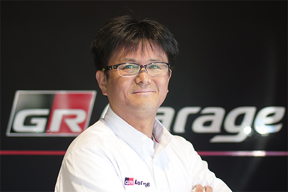
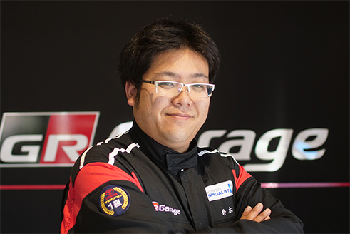
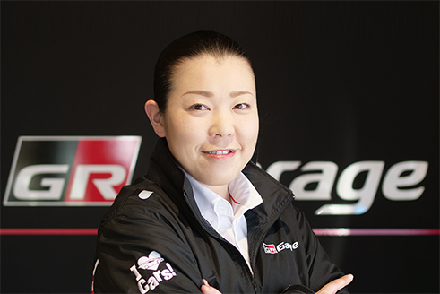
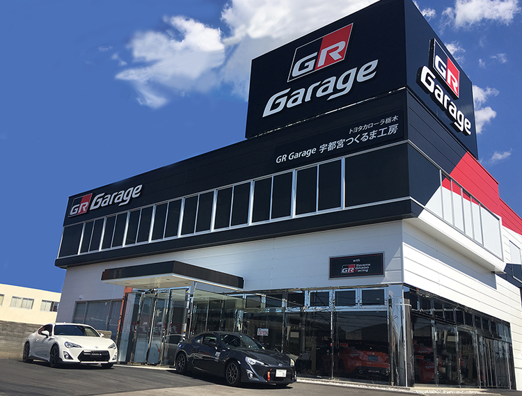

いいクルマとは何か。そこに明確な答えはない。
しかし、私たちは一つの条件として“走りたくなるクルマ”だと考える。
見た瞬間、座った瞬間、心まで動く。
そして、走り出せばクルマとの一体感、意のままに操る快感を感じられる。
世界中のモータースポーツに参戦するTOYOTA GAZOO Racing が
極限で培った技術と情熱を惜しみなく注ぐスポーツカーブランド、GR。
街を走るのに、レースに勝つ速さは必要ない。
だが、レースに勝てるクルマは安全でドライバーを疲れさせない。
何よりも乗っていて楽しい。圧倒的な安心感と快感のあるクルマ。
もっと走っていたいと思うクルマ。いいクルマとは何か。
終わりのない答えへの、挑戦を続ける。


ABOUT
GR GARAGE
宇都宮つくるま工房
GR Garage宇都宮つくるま工房はそのブランドを掲げ、クルマ好きが集まり、そして増えていく、そんな「町いちばんの楽しいクルマ屋さん」を目指し、2017年9月にオープンしました。
カスタマイズの知識に優れた専門スタッフが常時在籍、クルマが好きなお客様と共に語り、楽しむことはもちろん、カスタマイズやチューニングのご相談も承ります。
敷地面積約1870㎡、建築面積約880㎡、3基のリフトを備える整備工場があります。
Photo caption
ドライビングシミュレーター設置！
本格的なドライビングシミュレーターを設置。まずは、バーチャルで腕を磨くも良し！トップタイムのためにストイックに練習するのも良し！ぜひ、ご利用ください。
（1,000円／15分）
Photo caption
80年～90年代のスポーツカーも展示！
STAFF
GR GARAGE

新井 努
TSUTOMU ARAI GR CONSULTANT

鈴木 甲志
KATSUSHI SUZUKI GR CONSULTANT

佐藤 明里
AKARI SATO
PRODUCTS
GR GARAGE

SHOP INFO
GR GARAGE
宇都宮つくるま工房
